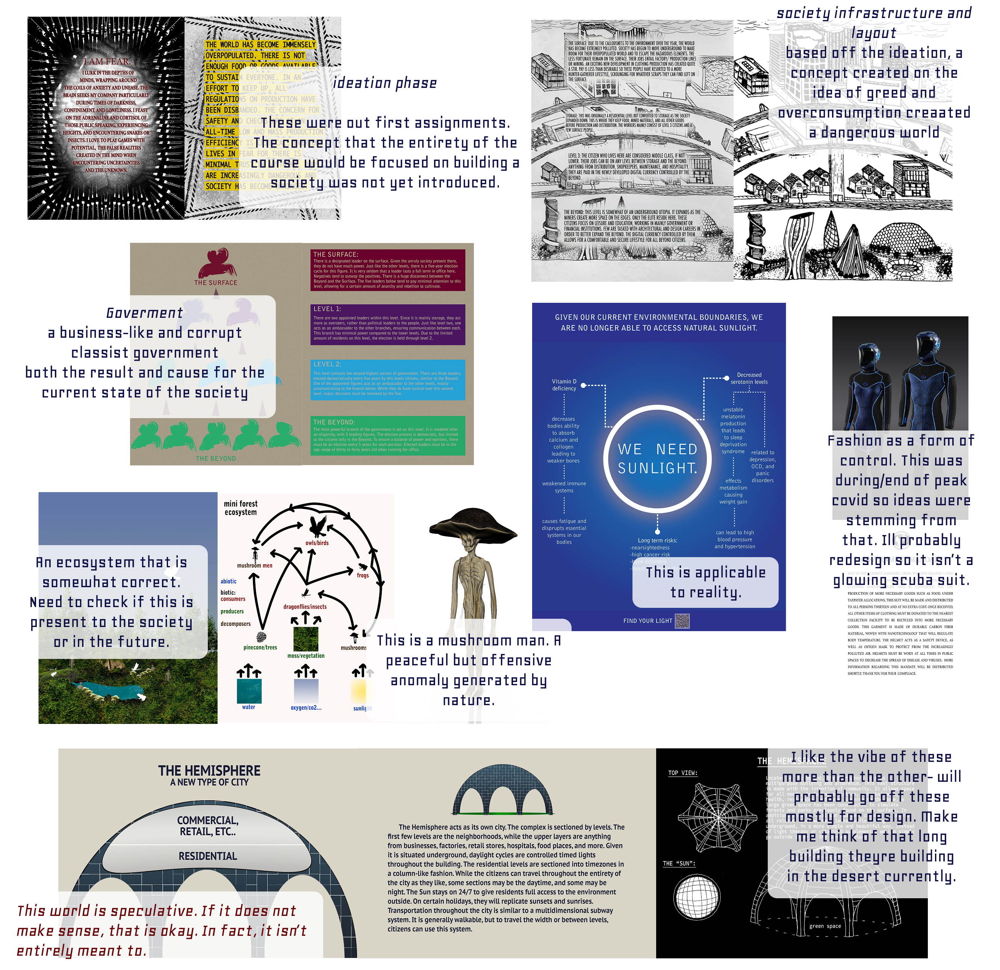
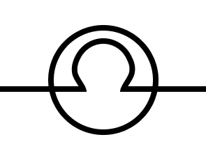

Web Dev and Design · Speculative Ideation and Storytelling
LowLight is a WordPress site built by revisiting and expanding on a speculative world-building project from my undergraduate work. The goal was to transform an existing concept into a cohesive, interactive website. This involved learning Pantheon hosting, developing in WordPress, and working with the Understrap child theme and SCSS to shape the site's structure, styling, and overall experience.
The project imagines an inverted society shaped by corruption and environmental collapse, where the wealthy live underground while those with fewer resources survive in harsh conditions closer to the surface. LowLight brings this fictional world online, using narrative, visuals, and interaction to explore power, inequality, and life within a fractured system.

My original work spanned throughout a quarter, where each week we employed speculative thinking to explore a different aspect of society.
Looking at the images together, I realized the project lacked the cohesiveness I was aiming for. The ideas were strong, but visually and structurally they felt scattered. This became a turning point that pushed me to rethink how the world could be organized as a website.
From there, a clearer structure emerged, allowing the project to unfold across focused sections like an overview, infrastructure, governance and social classes, health, ecosystem and environment, fashion and functional aesthetics, and architecture.
Because of the subject matter, the visual direction leans toward a darker, moodier palette with smoky tones. In contrast, elements representing the lower levels of the world may use brighter color moments to create tension and reinforce the story being told.
The Lowlight Society was inspired in part by Ursula K. Le Guin's The Ones Who Walk Away from Omelas and Hieronymus Bosch's The Garden of Earthly Delights—works that explore idealized worlds built alongside hidden suffering. In both, beauty and abundance are immediately visible, while harm is isolated, concealed, or pushed out of view.
In Lowlight, I chose to reverse this structure. The most polluted, unstable, and visibly damaged spaces exist closest to the surface, where they are impossible to ignore. These upper levels carry the consequences of environmental collapse and systemic neglect. Meanwhile, the most stable and prosperous environments are buried deep underground—carefully maintained, tightly controlled, and largely inaccessible to most of the population.
By inverting what is shown and what is hidden, Lowlight reframes the ethical tension of its influences. Rather than asking whether a utopia can justify unseen suffering, I wanted to ask what it means when a society hides its ideals and forces its failures to remain in plain sight.
Moss:
#454A38
Mustard:
#454A38
Slate:
#454A38
Crimson:
#454A38
Charcoal:
#454A38
The Beyond
The Surface
<h1>
<h2>
…
Font:
Syne Mono
<p>
<a>
…
Font:
Calibri

Hand-drawn illustrations were used to make the world feel more narrative and open-ended, leaving room for the viewer to fill in some of the gaps with their own imagination. A lot of the drawings have a blueprint or outline-like feel to them, combining structure with a bit of ambiguity to support the speculative nature of the project.

I started with a symbol commonly used in engineering and physics to represent light. It felt fitting given the industrial systems and structural focus within Lowlight Society.
From there, I reworked the form and incorporated a subtle reference to the helmets many upper-level citizens are required to wear.
By repurposing such a familiar symbol to represent the society, the Beyond creates a false sense of significance and superiority around the upper levels.